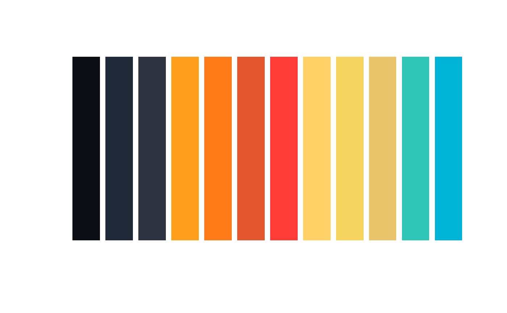

Returns colors from the Hough color palette, cycling through if more colors are requested than available. The palette includes dark anchors, warm tones, cool blues/cyans, purples, and highlights.
Usage
hough_palette(n, type = c("full", "contrast"))Examples
# Get 5 colors
hough_palette(5)
#> [1] "#0B0E14" "#1F2937" "#2E3440" "#FF9F1C" "#FF7A18"
# Get high-contrast colors
hough_palette(10, type = "contrast")
#> [1] "#FF9F1C" "#4CC9F0" "#E4572E" "#2EC4B6" "#FFD166" "#7209B7" "#FF3C38"
#> [8] "#00B4D8" "#E9C46A" "#B5179E"
# Visualize palette
if (require(graphics)) {
colors <- hough_palette(12)
barplot(rep(1, 12), col = colors, border = NA, axes = FALSE)
}
